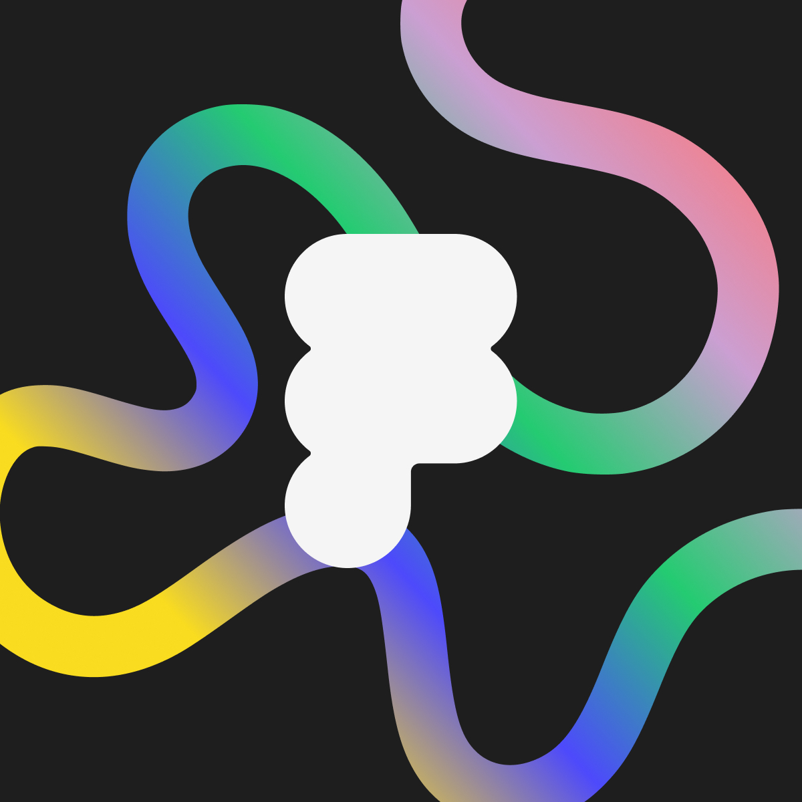

¿Qué le decís a alguien que no entiende cómo encaja su rol en tiempos de IA?
La IA está interrumpiendo cómo trabajamos en diseño y producto.
Hay mucho ruido y pocas voces que orienten
desde la experiencia real.
Queremos escucharte y entender la experiencia de alguien que lo está viviendo y guiando.
Ser parte del primer
panel de FoF Córdoba.
No es una presentación. Es una conversación entre pares sobre preguntas concretas que recibirás con anticipación.
Tu experiencia es el contenido. No hace falta preparar slides, solo compartir cómo lo estás navegando vos.
Primera vez en la ciudad. Las personas de la industria local necesitan escuchar esto de alguien como vos, en vivo.

Friends of Figma
Córdoba
Friends of Figma Córdoba es el chapter local de la comunidad oficial de Figma, con el objetivo de mantener activa y unida a la comunidad de diseñadores, PMs y referentes de producto de la ciudad, generando encuentros que potencien el intercambio y el crecimiento profesional.
Una comunidad global
organizada localmente.
Friends of Figma es la comunidad oficial de Figma, con chapters voluntarios en más de 100 ciudades del mundo. Cada chapter organiza eventos, meetups y conversaciones para diseñadores, PMs y personas de la industria tech.
¿Querés ser
parte?
Completá el formulario y te contactamos con los detalles del panel y las preguntas guía.
Confirmar participación